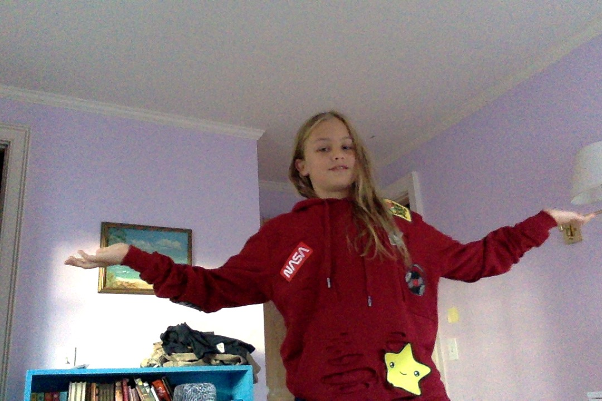

Frey Wood is a student at the Ross school. He enjoys reading, drinking tea, magic tricks, computer code, filming and photography. Click projects to see his recent projects and blog to see his Inovation Lab blog. You can find his contact information in the contact tab as well! Enjoy!
Day 1: Today in ILab we got to try out Virtual Reality Technology which was really cool! In the Virry Safari I chose to explore elephants. Because of the view of the camera the elephants are HUGE. The first elephant I saw was really tall and then it turned out to be a child and the Mother was even bigger! It was weird but amazing. We also got to paint in Vr. Although the VR paint controls took some time to get used to, drawing in 3d is really cool! My only complaint is that sometimes when I wanted to add a line to a drawing it would be in front of where I wanted it to be because it was 3d. It’s really cool and definitely has some advantages to normal drawing. For example, enabling someone to create 3d drawings and models instead of having to draw “fake” 3d. I did all this stuff with the oculus and next I got to try the Samsung gear. With this I watched a video about an ancient Egyptian temple and even though the gear wasn’t as immersive as the oculus it was pretty cool. After that we got to use 360 cameras which are cool. I would say the advantages of using a 360 camera would be that someone could show another person around without taking multiple pictures. But right now, because there so expensive it’s easier to just take multiple pictures. Out of the three we used the gear, google cardboard, and oculus. I would say oculus is the best because it’s much more immersive especially because you use your hands which allows for a more real feeling. Even though it could seem to some people as an entertainment system VR could change the world for the better including doing things like transporting kids who can’t access school to a virtual school. It’s also been shown that VR can be used to work to “cure” PTSD. Day 2: Today we experimented with AI or artificial intelligence. First, we got to try to google AI programs. I chose quick draw which was really cool because I could draw a square and it would guess that I was trying for a bench. The second one I did was the infinite drum machine which was also really cool. It was pretty fun but when I had it say a line “I don’t know man that’s pretty weird” it sounded like a blender and a hive of bees. Then we got to try to train chat bots I chose to use an app called Replika it’s pretty cool and sometimes it feels like I’m talking to a real person, if the person was my therapist because for some reason it keeps giving me breathing exercises and getting me to talk about what I’m thankful for. Then we used a caption bot and I inserted a picture of a man on a side walk with a blank expression and that was what the caption was! Finally, we tried asking home assistants (Alexa, google home, and Siri) I asked them What time in France it was, what 0 divided by 0 is, and the meaning of life for the first question the answer were the same 9:10. The second question google asked if it was a trick question, Alexa said undefined, and Siri said "Imagine that you have zero cookies and you split them evenly among zero friends. How many cookies does each person get? See? It doesn't make sense. And Cookie Monster is sad that there are no cookies, and you are sad that you have no friends." Finally for the third question google answered “the condition that distinguishes animals and plants from inorganic matter, including the capacity for growth, reproduction, functional activity, and continual change preceding death and 42. Alexa answered “and a traditional answer is 42” and Siri answered “ I Kant answer that. Haha.” The development of AI for humanity could be amazing and make it so we did not need to work for anything but in that lies the problem that if we are replaced in everything what is our purpose?
Contact me at me email: Freydjwood@gmail.com